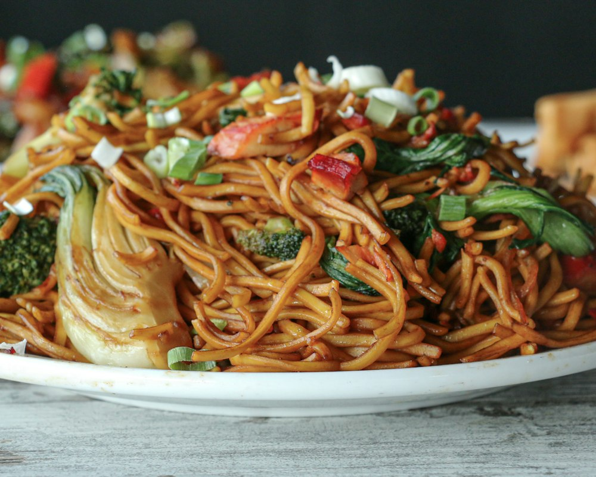

Vous recevez la famille ce week-end, vous fêtez un anniversaire, vous organisez une soirée entre amis ? Plutôt que de passer la journée en cuisine, faites-vous livrer un vrai repas mauricien à la maison. Chez Le Vinday, à Saint-Paul, la livraison de repas à domicile commence à 10 repas.
Pour quelles occasions ?
- Anniversaires d'enfants et d'adultes
- Repas de famille, baptêmes, communions
- Soirées entre amis, crémaillères
- Réunions d'association et fêtes de quartier
- Pique-niques, sorties à la plage ou au kiosque
Que peut-on commander ?
Toute la cuisine de l'île Maurice, et la touche créole de La Réunion :
- Briani, le plat de fête par excellence
- Mine frites et riz frit, que les enfants adorent
- Chop suey poulet ou poisson
- Carris mauriciens, carri poulet
- Farata et dholl puri
- Pour l'apéritif : petits pains garnis, mini pizzas, feuilletés, pilons panés
- Pour le dessert : un grand plateau de fruits frais
De la barquette au repas complet
Vous choisissez la formule qui vous convient. La simple barquette : un plat chaud par personne, prêt à manger, la solution la plus économique. Le repas complet : entrée, plat, dessert, avec la vaisselle si vous voulez (vraies assiettes et couverts, ou jetable). Et les boissons, avec ou sans alcool : Le Vinday est titulaire de la licence IV.
Des petits prix, adaptés à votre budget
Un repas de fête ne doit pas coûter une fortune. On compose le menu en fonction de votre budget et du nombre de convives, et le devis est gratuit. Dites-nous ce que vous voulez dépenser : on trouve la bonne formule.
Où livrons-nous ?
Partout à La Réunion. Dans l'Ouest, autour de notre cuisine de Bernica : Saint-Paul, Saint-Gilles-les-Hauts, Saint-Gilles-les-Bains, La Saline, L'Ermitage, Le Guillaume, Le Port, La Possession, Saint-Leu, Trois-Bassins. Et aussi dans le Nord, le Sud et l'Est.
Comment commander ?
Appelez le 06 92 27 02 37, écrivez-nous sur WhatsApp, ou utilisez la commande guidée du site. Pensez à commander quelques jours à l'avance, surtout pour les grandes tablées et les week-ends de fête.
Et pourquoi pas manger les pieds dans le sable ? Lisez comment se faire livrer un repas sur la plage.
L'abus d'alcool est dangereux pour la santé, à consommer avec modération.
Une envie de cuisine mauricienne ?
De la simple barquette au repas complet, de 10 à 400 personnes, livré partout sur l'île. Devis gratuit, adapté à votre budget.